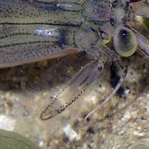
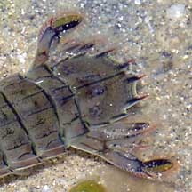
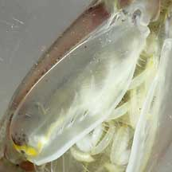

|
|
| mantis shrimps text index | photo index |
| Phylum Arthropoda > Subphylum Crustacea > Class Malacostraca > Order Stomatopoda |
| Mantis
shrimps Order Stomatopoda updated Mar 2020
Where seen? These large and busy shrimp-like animals are often seen on our Northern shores, especially among seagrasses. What are mantis shrimps? Mantis shrimps are not in the same group as prawns, although they appear similar. Mantis shrimps belong to Order Stomatopoda, while other shrimps and prawns belong to Order Decapoda which includes true crabs. Features: Mantis shrimps seen on our intertidal shores are mostly juveniles rarely exceeding 10cm, but some species can grow to 30cm as adults! While those found among seagrasses tend to be well camouflaged, mantis shrimps found in deeper waters near reefs can be quite colourful. |
 Changi, Jul 05 |
 Amazing eyes! |
 Powerful tail |
| Perilous Pincers: Mantis shrimps
got their common names from their huge front pincers that snap with
great speed and force. These resemble those of the praying mantis
insect or the blade of a pocket knife that folds into the handle.
In fact, like a living swiss army knife, all kinds of strange gadgetty
limbs are folded under the little animal, ready to be unleashed with
lethal effect. Mantis shrimp pincer modifications are generally of two types: spearers and smashers. Spearer mantis shrimps pincers are armed with sharp spines, from 2 to 20 spines. These pincers extend and retract much faster than an eye blink and the sharp spines impale soft, fast-moving prey like fishes and prawns. The pincers of smasher mantis shrimps are modified into clubs. These are used to bludgeon shelled prey. While snails and clams are simply dragged back to the burrow, crabs are often first immobilised by blows to the claws and legs. In the safety of the burrow, the victim's shell is further cracked. The blows of smasher mantis shrimp are so powerful that they have been known to break aquarium glass! Warrior shrimp: Mantis shrimps have other modifications that make them deadly predators. They have compound eyes that are considered among the most complex. They can see more colours than we can, and can see both UV and infra-red light. With just one eye, they already have binocular vision, important for accurately judging distance. So if they lose an eye, they can still hunt with the remaining eye! Their eyes are so fascinating that a study suggests that the structure of their eyes may inspire better DVD and CD players! Their eight pairs of legs are modified for various uses. The second pair of legs are modified into the deadly pincers described above. Remaining legs are used for walking. They also have five pairs of powerful paddle-shaped swimmeretes under the abdomen which are also used for burrowing. Their tails are heavily armoured to defend against the blows of other mantis shrimp in their territorial battles. |
 Deadly pincers of a spearer mantis shrimp. |
 Changi, Jul 05 |
 This is all that is usually seen of a mantis shrimp in hiding. Changi, Jul 04 |
| Shy mantis: Although common, mantis
shrimps are rarely seen. During the day, mantis shrimps usually retire
in their burrows or hiding places. They hunt at night. Some forage
for prey, crawling about on the bottom or swimming with powerful beats
of their swimmeretes. Others lie in wait at their burrow entrances
for passing prey. Anti-social shrimps: Like many predators, most mantis shrimp are solitary. They can be highly territorial and some have developed complex social behaviour to defend their space from rivals. Mantis shrimp are apparently quite smart: they can learn and remember well for a little crustacean! Baby mantis shrimps: Mantis shrimp are of separate genders. In some species, the males have larger pincers. The males have well developed copulatory projections called penes at the base of the last pair of legs. In most species, after mating, the female lays her eggs in a safe place like a burrow or carries them until they hatch. Some mantis shrimp species are monogamous. The mated pair share a burrow and while the female looks after the eggs, the male hunts for both of them. The free-swimming larvae look nothing like their parents and drift among the plankton for a while before settling to the bottom and changing into adult form. Here is a fascinating photo of a mantis shrimp larva on Image Quest 3-D Marine Library. Human uses: Mantis shrimp are said to be edible but not worth collecting commercially because they hard to catch. Their solitary and anti-social nature makes them impossible to farm. They are also not popular for the aquarium trade as they are ferocious predators. Smashers also can damage aquariums. However, mantis shrimp in the wild are attractive subjects for divers and other visitors to marine habitats. Status and threats: Our mantis shrimps are not listed among the threatened animals of Singapore. However, like other creatures of the intertidal zone, they are affected by human activities such as reclamation and pollution. Trampling by careless visitors and over-collection by hobbyists also have an impact on local populations. |
| Some mantis shrimps on Singapore shores |
| Order
Stomatopoda recorded for Singapore from The BIodiversity of Singapore, Lee Kong Chian Natural History Museum.
|
Links
|